3.5 Өкпе аурулары кезіндегі емдік дене тәрбиесі
Өкпе жолдарының ауруына адамның өмір сүру салты, қоршаған ортаның экологиясы және гендік факторлар әсер етеді. Өкпе ауруларының адам өміріне қаншалықты зиян екені белгілі. Дегенмен, дұрыс іс-шаралар өткізу арқылы аурудың алдын алуға, науқастың денсаулығын жақсартуға болады. Әрине, емдеу шараларының нәтижесі арудың асқыну дәрежесіне және науқастың иммунитетіне де байанысты. Өкпе жолдары ауыратын адамдарға ауа жетіспей, тыныс алу процесі қиындайды; жөтел пайда болады; тіпті қан құсуы мүмкін. Төменде өкпе жолдары белгілі бір дәрежеде ауырған және емделу үстіндегі адамдарға арналған жаттығулар ұсынылады.
1. Б.қ – арқада жату, шынтақтан бүгілген қол кеудеде. Дем шығарудың соңында қолмен кеудеге қысым жасау. Жаттығу 5-7 рет қайталанады (72-сурет).
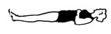
72-сурет. Шалқалап жатып тыныс алу кезінде қолмен кеудеге қысым жасау
2. Б.қ – арқада жату, қол дене бойында. Аяқты кезегімен тізеден бүгу. Тыныс алу баяу орындалады. Жаттығу 3-5 рет қайталанады (73-сурет).
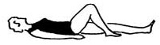
73-сурет. Шалқалап жатып аяқты кезегімен бүгу
3. Б.қ – арқада жату, қол кеудеде айқастырылған.
1. Қолды екі жаққа-жоғары көтеру – дем тарту.
2. Кеудені қапсара құшақтау – дем шығару. Жаттығу 5-6 рет қайталанады (74-сурет).
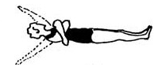
74-сурет. Қолды жоғарып көтеріп және кеудені қапсара құшақтап тыныс алу
4. Б.қ – орындықта отыру.
1. Аяқты бүгіп көтеру – дем тарту.
2. Аяқты тіктеу – дем шығару. Жаттығу 4-6 рет қайталанады. Дем шығаруға назар аудару керек (75-сурет).
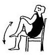
75-сурет. Орындықта отырып аяқты бүгу-жазу
5. Б.қ – орындықта отыру, қол екі жақта. Кеудені оңға және солға бұру. Жаттығу 5-7 рет қайталанады (76-сурет).
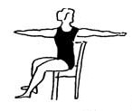
76-сурет. Қолды екі жақта ұстап денені оңға-солға бұру
6. Б.қ – орындықта отыру. Қолды жоғары көтеру – дем тарту. Алға еңкею – дем шығару. Жаттығу 4-6 рет қайталанады. Дем шығаруға назар аудару керек (77-сурет).
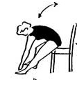
77-сурет. Орындықта отырып алға еңкею
7. Б.қ – орындықта отыру, қол белде. Аяқ пен қолды кезегімен көтеру. Жаттығу 5-7 рет қайталанады (78-сурет).
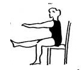
78-сурет. Орындықта отырып аяқ пен қолды кезегімен көтеру
8. Б.қ – орындықта отыру, қол тізеде. Иықты артқа шығару – дем тарту, иықты төмен түсіру – дем шығару. Жаттығу 4-6 рет қайталанады (79-сурет).
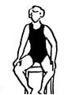
79-сурет. Орындықта отырып иықты артқа тарту және төмен түсіру
9. Б.қ – орындыққа оң (сол) қолмен сүйеніп тұру. Денені оңға және солға қисайту. Дәл солай екі жаққа 5-7 рет қайталанады (80-сурет).
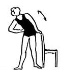
80-сурет. Орындықтан ұстап тұрып денені оңға-солға қисайту
10. Б.қ – орындықтан екі қолмен ұстап тұру. Аяқты кезегімен артқа шығару. Жаттығу 6-8 рет қайталанады (81-сурет).
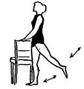
81-сурет. Орындыққа сүйеніп тұрып аяқты кезегімен артқа шығару
11. Б.қ – аяқты ашып тұру, қайшыланған қол төменде. Қолды жоғары көтеру – дем шығару, кеудені алға еңкейту, қол төменде – дем шығару. Жаттығу 3-6 рет қайталанады. Дем шығаруға назар аудару керек (82-сурет).
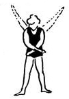
82-сурет. Қолды жоғары көтеру-түсіру арқылы тыныс алу
12. Б.қ – аяқты ашып тұру, саусақтар айқастырылған. Кеудені шеңбер бойымен 5-8 рет айналдыру (83-сурет).
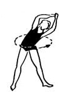
83-сурет. Кеудені шеңбер бойымен айналдыру
13. Б.қ – н.т. Аяқ пен қолды кезегімен артқа шығару. Жаттығу 5-7 рет қайталанады. Тыныс алу еркін орындалады (84-сурет).
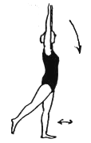
84-сурет. Аяқ пен қолды кезегімен артқа шығару
14. Б.қ – н.т. Қол мен иықты артқа шығару – дем тарту, бас пен иықты төмен түсіру – дем шығару. Жаттығу 4-6 рет қайталанады (85-сурет).
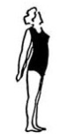
85-сурет. Иық пен қолды артқа шығарып тыныс алу
15. Б.қ – тұру, қол екі жақта. Алға еңкею, қолды қайшылау – дем шығару. Жаттығу 3-5 рет қайталанады.
16. Б.қ – орындықта отыру, қол иықта. Шынтақты артқа шығару – дем тарту; алға еңкею, шынтақты кеудеге тигізу – дем шығару. Жаттығу 4-6 рет қайталанады (86-сурет).
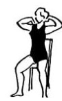
86-сурет. Орындықта отырып орындалатын тыныс алу жаттығуы
17. Б.қ – аяқты ашып тұру, қол белде. Кеудені оңға-солға қисайту. Жаттығу 5-7 рет қайталанады.
18. Б.қ – аяқ иық деңгейінде, қол төменде. Қолды көтеріп шалқаю – дем тарту. Алға еңкею, босаңсыған қол төменде – дем шығару. Жаттығу баяу қарқынмен 3-6 рет қайталанады.
19. Бір орында тұрып немесе бөлмеде әрі-бері 30-60 секунд орташа қарқынмен жүру.
: сонымен қатар, жоғарыда аталған дыбыс шығару жаттығулары да қолданылады.
Созылмалы бронхит кезінде жасалатын жаттығулар үлгісі
Созылмалы бронхит кезінде де жоғарыда аталған серуендеу, циклді қозғалыс түрлері, емдік гимнастика және төмендегідей жаттығулар кешенін ұсынылады.
1. Екпінді өзгертіп 30-60 секунд жүру. Тыныс алу еркін орындалады.
2. Аяқты ашып тұру, қол екі жақта. Кеудені оңға және солға бұру. Жатығу баяу қарқынмен екі жаққа 6-8 рет қайталанады.
3. Аяқты ашып тұру, қол белде. Оңға және солға еңкею. Жаттығудың орындалу қарқыны орташа және 5-7 рет қайталанады.
4. Аяқ иық деңгейінде, қол төменде. Қолды екі жаққа шығару – дем тарту. Кеудені қолмен қапсара құшақта алға еңкею – дем шығару. Жаттығу орташа қарқынмен 4-6 рет қайталанады.
Төменде көрнекі құрал ретінде және шұғылданушының жаттығуды орындау ретін оңай түсіну үшін, жоғарыда ұсынылған жаттығулардың орындау кезіндегі қимылдардың бейнесін 87-суретте ұсынып отырмыз.
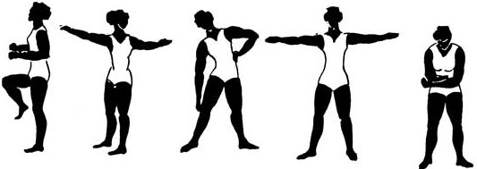
87-сурет. Созылмалы бронхит кезінде орындалатын жаттығулардың үлгілері
13. – дем тарту, жүрелей отыру – дем шығару. Жаттығу орташа қарқынмен 5-7 рет қайталанады (88-сурет).
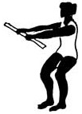
88-сурет. Гимнастикалық таяқшаны көтеру және жүрелей отыру жаттығуы
14. Аяқты ашып тұру, гимнастикалық таяқша артта. Шалқайып, таяқшаны жоғары көтеру. Жаттығу баяу қарқынмен 4-6 рет қайталанады. Тыныс алу еркін орындалады (89-сурет).
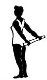
89-сурет. Гимнастикалық таяқшаны артқа көтеру
15. Еңкейіп тұру, таяқша алға. Кеудені оңға-солға бұру. Жаттығудың орташа қарқынмен 5-7 рет қайталау.
16. Аяқты ашып тұру, таяқша жоғарыда. Алға 3 рет еңкею және бастапқы қалыпқа келу. Жаттығу орташа қарқынмен 4-6 рет қайталанады.
17. 30-60 секунд жүру.
Өкпе аурулары кезінде емдік дене тәрбиесі құралы ретінде қолданылатын жаттығулар кешені
Өткір пневмония кезінде тыныс алу гимнастикасының жаттығулары ұсынылады. Көкірек қуысына қыздыратын майлар жағып, массаж жасалады. Содан кейін денені жылы орап, белгілі бір уақыт төсекте жату керек болады. Созылмалы пневмония кезінде де циклді бағыттағы жеңіл жаттығулар ұсынылады.
Төменде жаттығулар кешенін ұсынамыз
1. Етпеттеп жату. Бір қол құрсақта, екіншісі кеудеде және 30 секунд «ішпен тыныс алу».
2. Етпеттеп жату. Қол жоғары көтеру, аяқты тізеден бүгу – дем тарту; қолды төмен түсіру және аяқты тіктеу – дем шығару. Жаттығу 5-6 рет қайталанады.
3. Етпеттеп жату, аяқ тізеден бүгілген. Қолды екі жаққа шығару – дем тарту, қолмен кеудені қапсара құшақтау – дем шығару. Жаттығу 4-6 рет қайталанады.
4. Етпеттеп жату, қол төменде. Қолмен тізеден ұстап, аяқты кеудеге тарту – дем тарту; аяқты тіктеу, қолды төмен түсіру – дем шығару. Жаттығу 6-8 рет қайталанады.
5. Етпеттеп жату, аяқ тізеден бүгілген, қол кеудеде. Аяқты оңға және солға қисайту. Жаттығу екі жаққа кезегімен 4-6 рет қайталанады.
6. Орындықта отыру. Қолды екі жаққа шығару – дем тарту; кеудені қапсара құшақтау – дем шығару. Жаттығу 5-6 рет қайталанады.
7. Орындықта отыру, қол иықта. Қолды алға және артқа айналдыру. Жаттығу 6-8 рет қайталанады.
8. Орындықта отыру, қол құрсақта. Қолмен қысым көрсете отырып 30-60 секунд «құрсақпен тыныс алу».
9. Орындықта отыру, қол белде. Қоды жоғары көтеру – дем тарту, алға еңкею – дем шығару. Дем тарту мұрын арқылы, ал дем шығару ауызбен жүзеге асырылады. Жаттығу 5-6 рет қайталанады.
10. 20-30 секунд жүру.
11. Аяқты ашып тұру, қолда доп. Кеудені оңға және солға бұру. Жаттығу екі жаққа 6-8 рет қайталанады.
12. Аяқты ашып тұру, қолда доп. Қолды жоғары көтеру – дем тарту; қолды төмен түсіру – дем шығару. Жаттығу 6-8 рет қайталанады.
13. Аяқты ашып тұру, қолда доп. Қолды иықтан оңға және солға айналдыру. Жаттығу екі жаққа 6-8 рет қайталанады.
14. Бір орында 30-40 секунд жүру, бір орында 15-30 секунд жүгіру. Тыныс алу еркін орындалады.